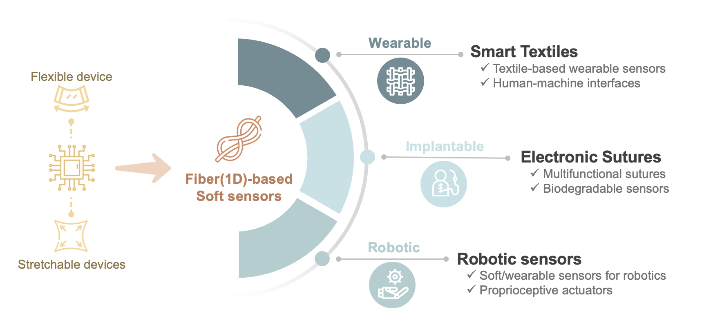
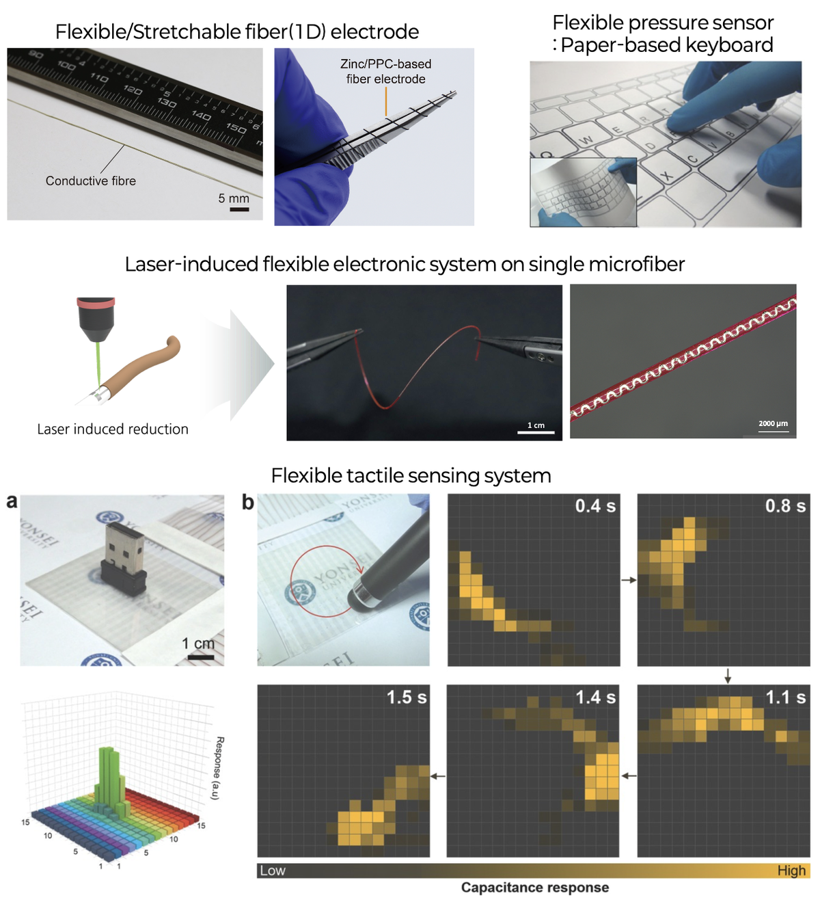
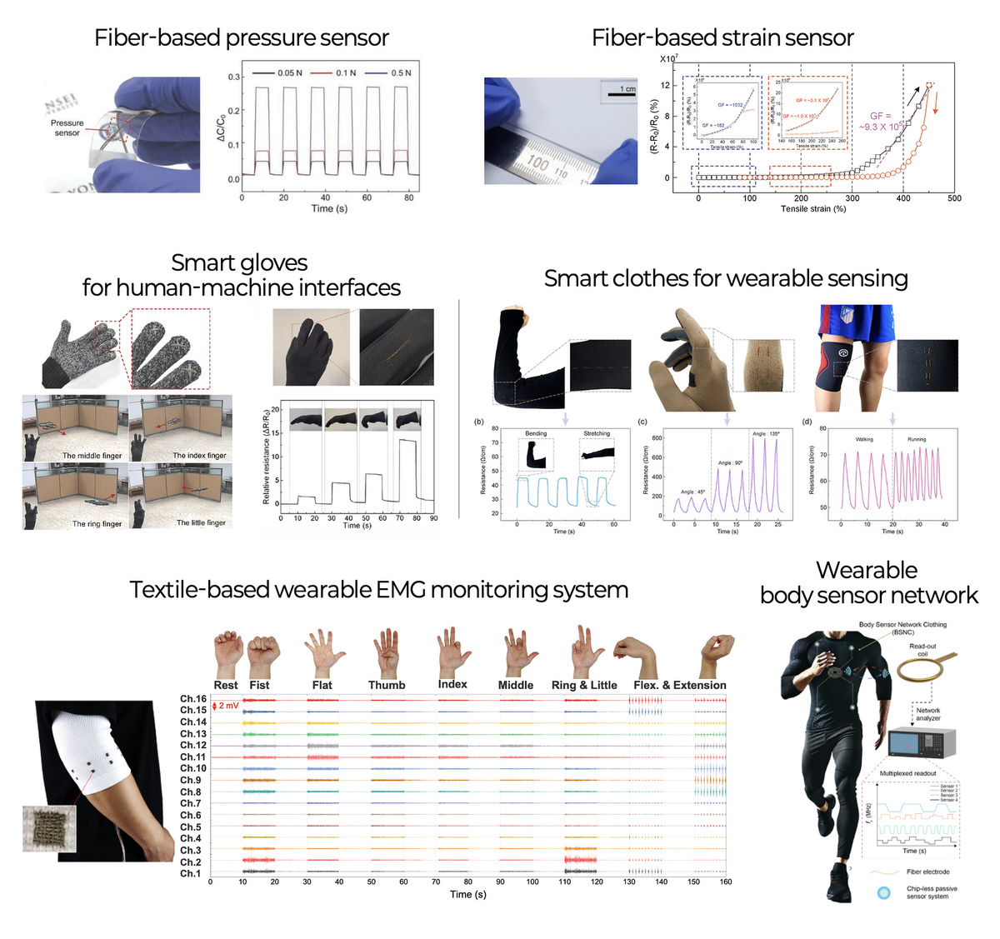
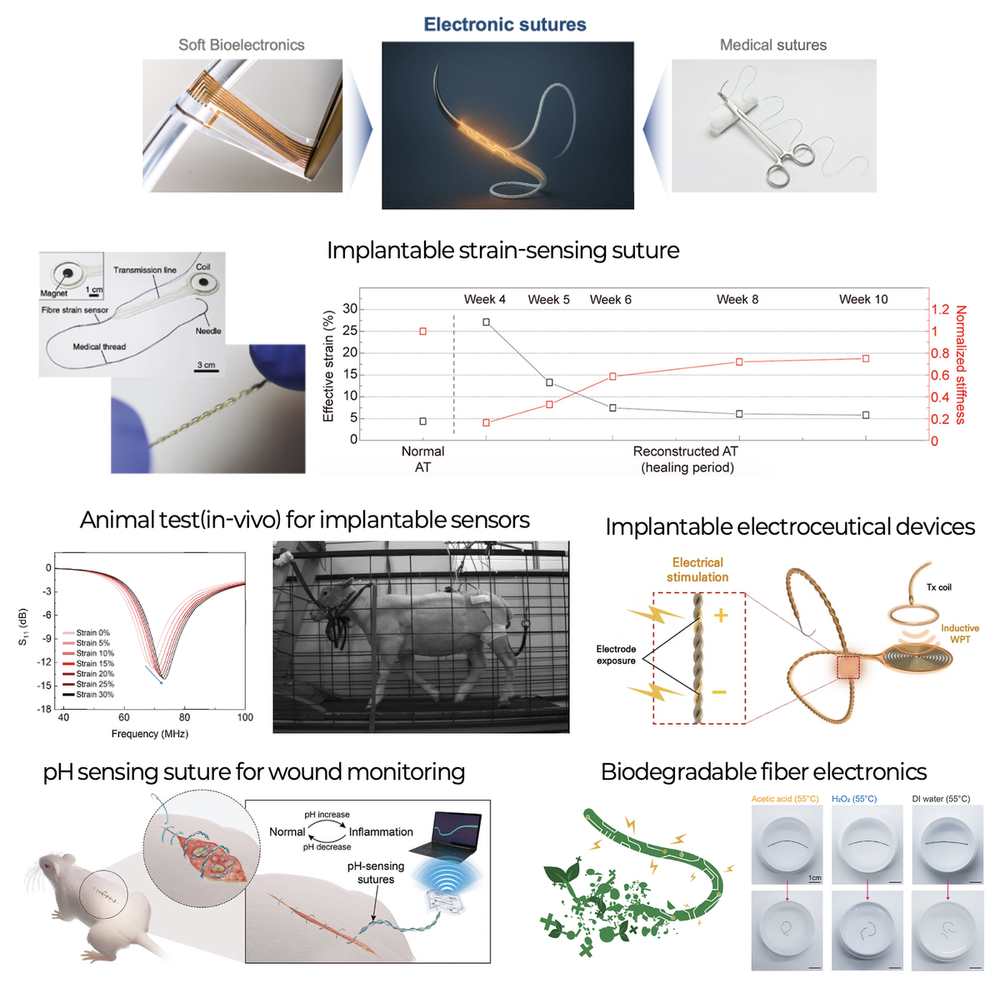
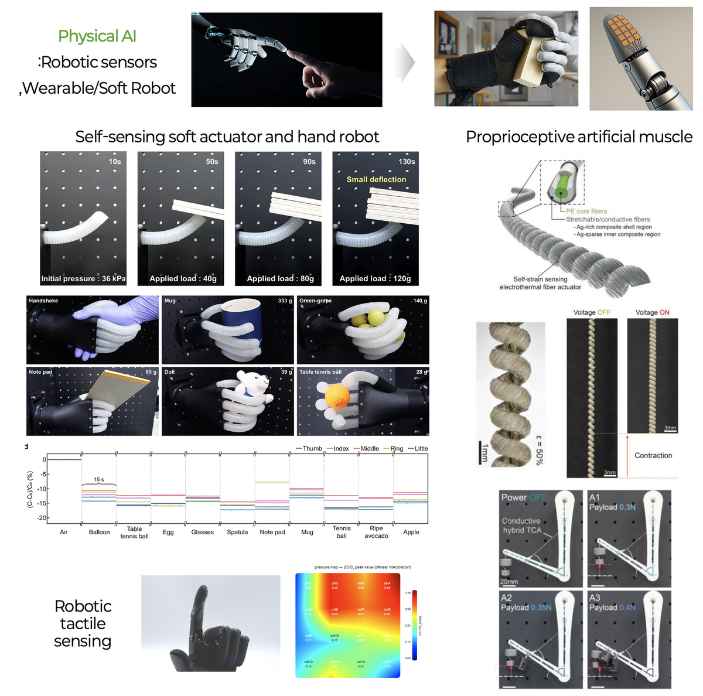

Research Overview
The Soft Bioelectronics Lab (SoBiLab) pursues a unified research vision grounded in fiber-based one-dimensional (1D) soft electronics and sensors. By exploiting the unique structural advantages of single microfibers — mechanical flexibility, stretchability, and seamless integrability into complex 1D and 3D form factors — we develop a versatile platform that spans from fundamental materials and device engineering to system-level applications.
Built on this fiber-centric foundation, our research extends across four interconnected domains: flexible & stretchable electronics, wearable textile sensors & human-machine interfaces, implantable healthcare bioelectronics, and soft robotic tactile sensing toward Physical AI. Each domain leverages the common 1D fiber platform to address real-world challenges in health monitoring, biomedical intervention, and intelligent robotic systems.

Mechanical compliance including flexibility and stretchability is a key feature of soft electronic devices for wearable or biomedical applications. We have developed several types of flexible and stretchable electronic devices such as bioinspired flexible pressure sensor array, paper keyboard, 1D stretchable sensors, etc. Based on the plentiful experience and expertise in flexible/stretchable electronics, we are extending our research to soft robotics, actuators, and wearable robotics.
Key Research Areas
- 1D flexible/stretchable fiber electrodes
- Paper-based pressure sensor keyboard
- Laser-induced flexible electronic systems
- Flexible tactile sensing with capacitance mapping


Based on fiber-based electronic sensors, various wearable electronics, particularly electronic textile, can be implemented. Simply by sewing the fiber-based mechanical sensors into typical textiles, gloves, and clothes, smart gloves which can wirelessly control a drone and robot can be successfully developed. Real-time pressure sensing textiles for monitoring shape and weight of a passenger on a chair is another application of fiber sensors. In addition, numerous awesome applications will be demonstrated by SoBiLab.
Key Research Areas
- Fiber-based pressure and strain sensors
- Smart gloves for human-machine interfaces
- Textile-based wearable EMG monitoring
- Wearable body sensor networks
1D fiber-based electronic devices have a unique advantage in biomedical or implantable applications thanks to the structural feature. The thin and elongated fiber form factor can be readily combined with conventional medical sutures, and thus the electronic sutures can be implanted into the body through a standard surgical suturing process. We have developed various types of electronic sutures for implantable strain sensing, electroceutical stimulation therapy, pH sensing for wound monitoring, and biodegradable electronics. Our implantable bioelectronic systems have been validated through extensive in-vivo animal studies.
Key Research Areas
- Implantable strain-sensing electronic sutures
- Wireless implantable electroceutical devices
- pH-sensing suture for wound monitoring
- Biodegradable fiber electronics


One of the key requirements for soft robotic systems is the sensing feedback control of soft actuators, which is essential for their reliable operation in dynamic environments. In this context, the proprioceptive or interactive sensing capabilities of a soft robotic system become crucial for practical, real-world applications. Our group is dedicated to developing various state-of-the-art soft sensing technologies tailored for these systems. Ultimately, our goal is to seamlessly integrate these sensing technologies into wearable and soft robotic systems, creating a synergy with our wearable and implantable sensing systems.
Key Research Areas
- Self-sensing soft actuators & hand robots
- Proprioceptive artificial muscles (TCA)
- Robotic tactile sensing & object recognition
- Physical Intelligence & Physical AI